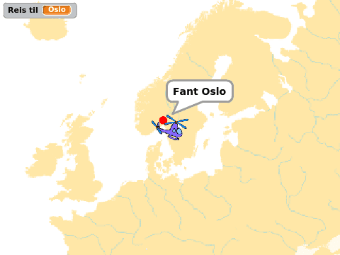
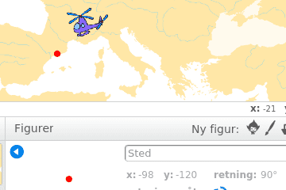
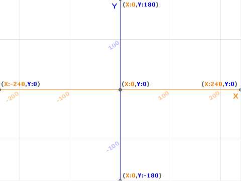
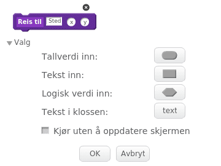

Hvor i All Verden? er et reise- og geografispill hvor man raskest
mulig skal fly innom reisemål spredt rundt i Europa. Dette er den
andre leksjonen av tre. Her skal vi spesielt se på hvordan vi kan
gjøre kartet større enn skjermen, ved å la kartet rulle i
bakgrunnen. Underveis vil vi se litt nærmere på hva et koordinatsystem
er.
I den siste leksjonen vil lage lister som gjør det enklere å legge til
mange reisemål. Vi vil også lage en skikkelig intro til spillet.

Steg 0: Forrige gang
Vi vil nå fortsette med det programmet vi laget i del 1.
Sjekkliste
Siden vi skal forandre og videreutvikle flere ting trenger ikke
spillet du laget i del 1 være helt perfekt. Sjekk likevel at
Hvis ikke disse tingene fungerer så gå tilbake til del 1 og gjør dem
ferdige.
Steg 1: Bakgrunnen som figur
Vi vil nå at bakgrunnen skal bli flyttbar. Vanlige bakgrunner i
Scratch kan ikke flyttes. Vi må derfor "jukse litt", og la bakgrunnen
være en figur.
Sjekkliste
når grønt flagg klikkes
flytt bakover (50) lag
sett størrelse til (9999) %
Du vil se at størrelsen ikke blir satt til 9999, men til et
mindre tall. Legg på en kloss som setter så stor størrelse som
mulig på kartet når det grønne flagget klikkes.
Koordinatsystemer
I del 1 så vi såvidt hvordan vi bruker koordinater for å beskrive hvor
helikopteret og reisemålet er på skjermen (og på kartet). Om du
trykker i på en figur vil du alltid se koordinatene til
figuren, som to tall x og y.

Midt på skjermen har koordinatene x: 0 og y: 0. Ellers beskriver
x hvor et punkt er sideveis. Dersom x er mindre enn null er
punktet til venstre for midten, mens om x er positivt er punktet til
høyre for midten. På samme måte sier y hvor høyt på skjermen et
punkt er. y større enn null betyr at punktet er over midten, mens et
punkt med negativ y vil være nedenfor midten av skjermen.

Vanligvis passer Scratch på disse koordinatene for oss, slik at vi
ikke trenger å tenke så mye på dem.
Men nå skal vi gjøre noe litt spesielt. Vi vil skape en illusjon hvor
det ser ut som om helikopteret flytter på seg, mens det egentlig er
bakgrunnen som flytter seg. For å gjøre dette må vi lage våre egne
X- og Y-variabler som vi bruker til å koble helikopteret, stedet
og bakgrunnen.
Steg 2: Nye kontroller for helikopteret
Vi vil først endre hva som skjer når vi trykker på piltastene.
Sjekkliste
gå (hastighet) steg
vil vi endre X eller Y med
hastighet eller med
((0) - (hastighet))
Oppdater alle fire hvis-løkkene på helikopteret.
Test prosjektet
Klikk på det grønne flagget.
Steg 3: Flytt kartet
Vi kan nå flytte kartet når helikopteret flyr rundt omkring.
Sjekkliste
Dette steget er egentlig ganske lett. Det eneste vi må passe er at vi
skal flytte kartet motsatt vei av hva helikopteret skal fly. For
eksempel, om vi vil at det skal se ut som om helikopteret flytter seg
oppover må vi flytte kartet nedover.
når jeg mottar [Nytt spill v]
vis
for alltid
gå til x: ((0) - (X)) y: ((0) - (Y))
slutt
Test prosjektet
Klikk på det grønne flagget.
Utfordring
Hvordan kan du begrense hvor helikopteret flyr? Kan du legge på kode
slik at helikopteret ikke kan fly ut av kartet?
Steg 4: La stedet følge med
Vi må nå la reisemålet også flytte seg med kartet.
Sjekkliste
sett [gjennomsiktig v] effekt til (50)
gå til x: (-98) y: (-120)
med kode som setter variablene i stedet:
sett [stedX v] til [-98]
sett [stedY v] til [-120]
når jeg mottar [Nytt spill v]
for alltid
gå til x: ((stedX) - (X)) y: ((stedY) - (Y))
slutt
Prøv spillet. Flytter den røde prikken seg rundt på kartet?
Endre verdiene for X og Y til det ser ut som om reisemålet
ligger omtrent på riktig sted igjen.
Steg 5: Flere steder
Vi skal nå se på hvordan vi relativt enkelt kan legge til flere
reisemål i spillet vårt.
Sjekkliste
Om du bare ser på koden vi har lagt på sted-figuren kan det se ut som
om det er mye arbeid å legge til et nytt reisemål. Men om vi ser litt
nøyere oppdager vi at om vi vil ha et nytt sted å reise til kan vi
bruke mye av den samme koden. Vi må bare endre navnet
(Reis til) og koordinatene (X og
Y).
Dette er et bra eksempel på når det kan lønne seg å bruke funksjoner,
eller lage egne klosser som man gjør i Scratch.

hvor sted er tekst, mens x og y er tallverdier:
definer Reis til (sted) (x) (y)
Under denne klossen kan vi definere hva funksjonen vår skal gjøre.
definer Reis til (sted) (x) (y)
sett [gjennomsiktig v] effekt til (100)
sett [stedX v] til (x)
sett [stedY v] til (y)
sett [Reis til v] til (sted)
vent til <berører [Helikopter v]?>
sett [gjennomsiktig v] effekt til (0)
si (sett sammen [Fant ] (sted))
gjenta (5) ganger
gjenta (10) ganger
endre størrelse med (10)
slutt
gjenta (10) ganger
endre størrelse med (-10)
slutt
slutt
si []
når jeg mottar [Nytt spill v]
vis
Reis til [London] (-135) (-30) :: custom
Reis til [Oslo] (-30) (75) :: custom
Reis til [Barcelona] (-135) (-175) :: custom
Den enkleste måten å løse dette på er å legge på klossen
vent til <ikke <berører [Helikopter v]?>>
rett før vi venter til helikopteret berøres inne i funksjonen vår.
Test prosjektet
Klikk på det grønne flagget.
Neste gang
Spillet vårt har blitt ganske mye kulere nå! Neste gang skal vi gjøre
spillet ferdig ved å lage lister som gjør det enklere å lage en
tilfeldig reiserute. Vi skal også se hvordan vi kan lage en intro til
spillet, samt legge på en tidsbegrensning og poengsum.
Prøv selv
Forbedre denne siden
Funnet en feil? Kunne noe vært bedre? Hvis ja, vennligst gi oss tilbakemelding ved å lage en sak på Github eller fiks feilen selv om du kan. Vi er takknemlige for enhver tilbakemelding!